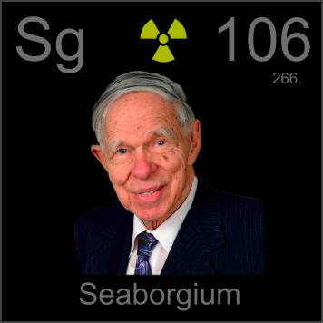

HOME
PREVIOUS
NEXT

Seaborgium
Atomic Weight: 269[note]
Density: N/A
Melting Point: N/A
Boiling Point: N/A
Glenn T. Seaborg is the only person ever to have an element named after him while he was still alive. He was responsible for discovering nearly a dozen super-heavy elements, making this a fitting honor.